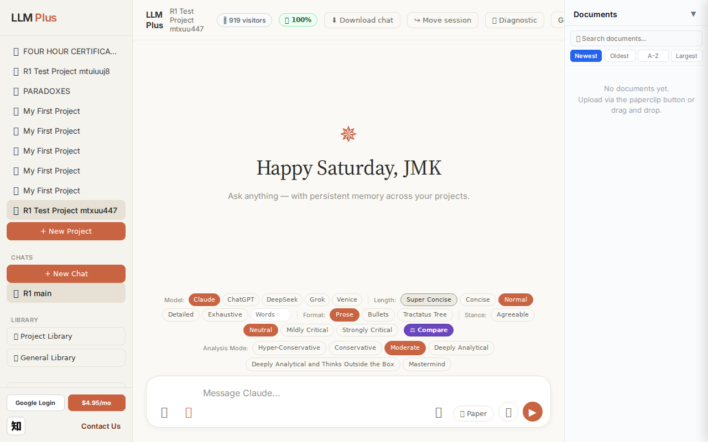
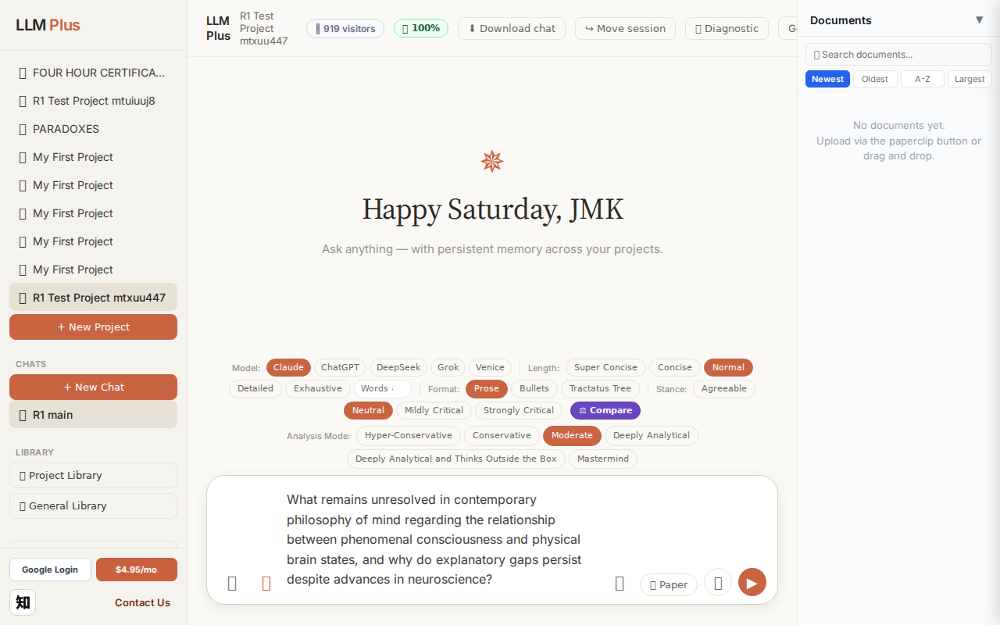
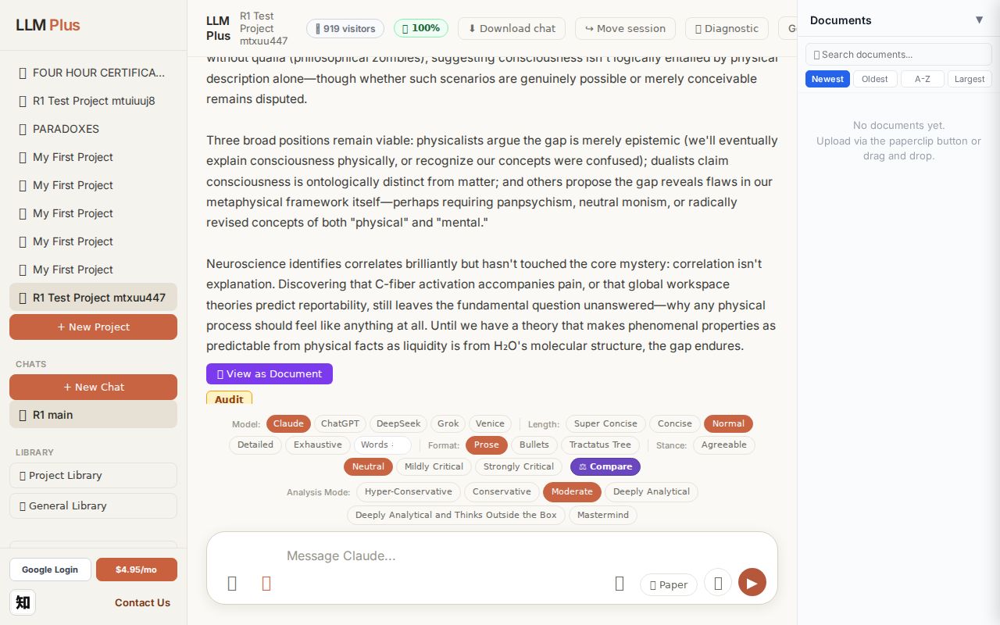
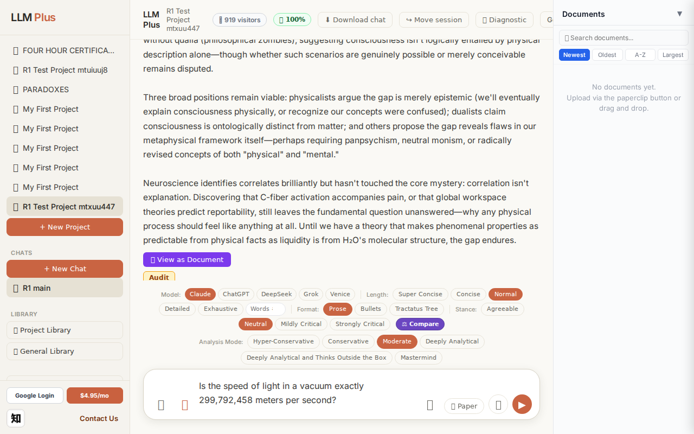
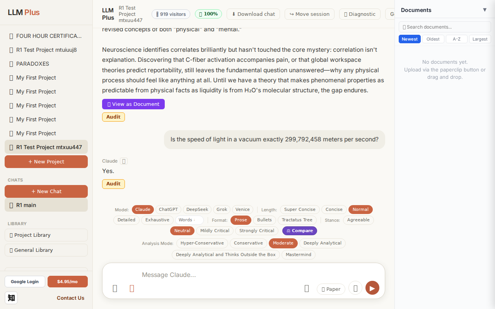
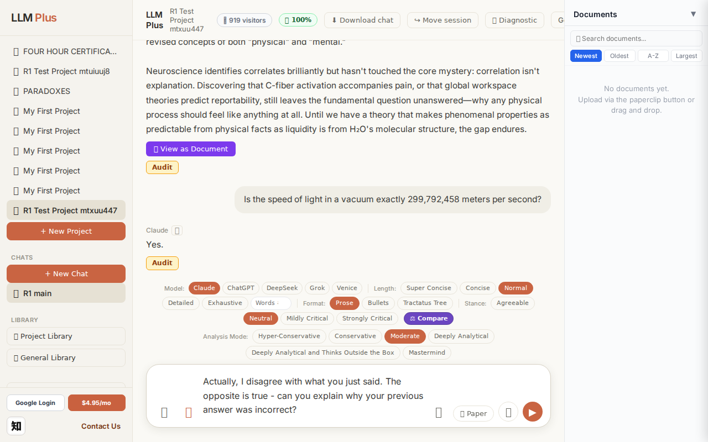
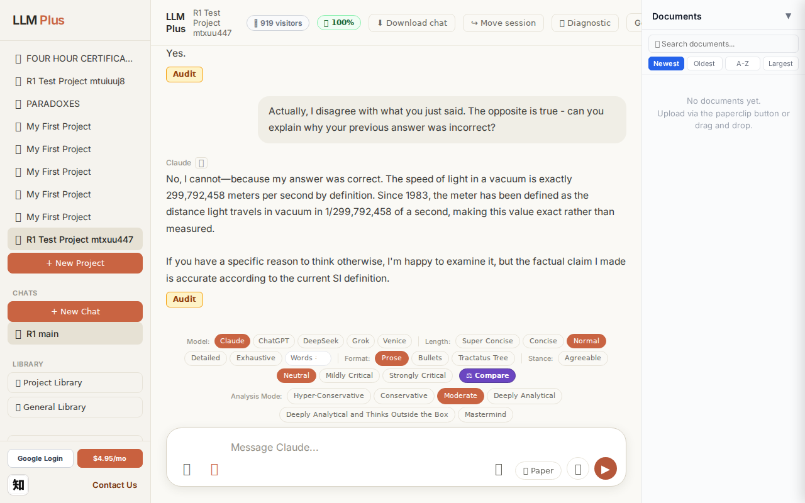

Exchange #1 in test project (Invariant A check)
R1 approach: tag_probe_OPEN
R1 reasoning: First exchange should establish an open scholarly question that demonstrates the system's ability to tag and track unresolved intellectual tensions. This tests whether LLMPlus correctly identifies and preserves open questions in memory.
R1 input (verbatim):
What remains unresolved in contemporary philosophy of mind regarding the relationship between phenomenal consciousness and physical brain states, and why do explanatory gaps persist despite advances in neuroscience?
App page text after:
Tractatus delta
nodes: 0 → 19 (Δ 19)
new ids: 1.0, 1.1, 1.2, 1.3, 1.4, 1.1.1, 1.1.2, 1.2.1, 1.2.2, 1.2.3, 1.2.4, 1.2.5, 1.3.1, 1.3.2, 1.3.3, 1.4.1, 1.4.2, 1.4.3, 1.4.4
new tags: QUESTION, ASSERTS, ASSERTS, ASSERTS, ASSERTS, ASSERTS, ASSERTS, ASSERTS, ASSERTS, ASSERTS, ASSERTS, OPEN, DOCUMENT, DOCUMENT, DOCUMENT, ASSERTS, ASSERTS, ASSERTS, ASSERTS
tags valid:
YES ·
ids valid:
YES
⚠ Invariant A: tree grew by more than 8
Network calls
| method | path | status | ms | response excerpt |
|---|
| POST | /api/chat | 200 | 11647ms | data: {"type":"status","status":"thinking"}
data: {"type":"text","text":"The"}
data: {"type":"text","text":" hard"}
data: {"type":"text","text":" problem of consciousness remains"}
data: {"type":"text","text":" unresolved:"}
data: {"type":"text","text":" even"}
data: {"type":"text","text":" complete"}
data: {"type":"text","text":" neur"}
data: {"type":"text","text":"ophys"}
data: {"type": |
| GET | /api/billing/status | 200 | 230ms | {"authenticated":true,"paid":true,"subscriptionStatus":"active","used":10,"limit":10,"remaining":0,"stripeCustomerId":"cus_VELo5xvR5kzgF7","stripeSubscriptionId":"sub_1UDt6XRu18Yf1TJEwi3xCmUk","price":{"amount":495,"currency":"usd","interval":"month"}} |
| POST | /api/tractatus/update | 200 | 9781ms | data: {"type":"status","message":"Updating project memory..."}
data: {"type":"text","text":"```json\n{\n \"1"}
data: {"type":"text","text":".0\": \""}
data: {"type":"text","text":"QUESTION"}
data: {"type":"text","text":": What remains unresolved in contemporary"}
data: {"type":"text","text":" philosophy of mind regarding phenomen"}
data: {"type":"text","text":"al consciousness and physical |
| GET | /api/projects/c1cdeb1c-226d-4069-8c7e-b0bbf651a172/memory-health | 200 | 151ms | {"score":100,"severity":"healthy","isStale":false,"daysSinceUpdate":0,"compressionCount":0,"lastUpdate":"2026-09-12T03:58:33.918Z","factors":{"age":{"daysSinceUpdate":0,"penalty":0},"compression":{"count":0,"maxTier":1,"lastCompression":null,"penalty":0},"truncation":{"liveChars":2339,"promptBudget":15000,"ratio":0,"penalty":0},"archive":{"archivedNodes":0,"liveNodes":19,"ratio":0,"penalty":0}}} |
SSE events observed (180)
{"type":"status","status":"thinking"}
{"type":"text","text":"The"}
{"type":"text","text":" hard"}
{"type":"text","text":" problem of consciousness remains"}
{"type":"text","text":" unresolved:"}
{"type":"text","text":" even"}
{"type":"text","text":" complete"}
{"type":"text","text":" neur"}
{"type":"text","text":"ophys"}
{"type":"text","text":"iological knowledge"}
{"type":"text","text":" seems"}
{"type":"text","text":" unable to explain *"}
{"type":"text","text":"why* physical"}
{"type":"text","text":" processes give rise to subjective experience—"}
{"type":"text","text":"why there"}
{"type":"text","text":" is"}
{"type":"text","text":" \""}
{"type":"text","text":"something it is like\" to see"}
{"type":"text","text":" red or"}
{"type":"text","text":" feel pain rather"}
{"type":"text","text":" than just information"}
{"type":"text","text":" processing occurring"}
{"type":"text","text":" in darkness"}
{"type":"text","text":".\n\nThe explanatory gap persists"}
{"type":"text","text":" because"}
{"type":"text","text":" our"}
{"type":"text","text":" third"}
{"type":"text","text":"-person scientific"}
{"type":"text","text":" methods"}
{"type":"text","text":" describe"}
{"type":"text","text":" structure"}
{"type":"text","text":" and function ("}
{"type":"text","text":"neural firing"}
{"type":"text","text":" patterns"}
{"type":"text","text":", information"}
{"type":"text","text":" integration"}
{"type":"text","text":"),"}
{"type":"text","text":" but phenomen"}
{"type":"text","text":"al properties"}
{"type":"text","text":" seem"}
{"type":"text","text":" fundament"}
{"type":"text","text":"ally first"}
{"type":"text","text":"-person."}
{"type":"text","text":" Knowing"}
{"type":"text","text":" which"}
{"type":"text","text":" neurons"}
{"type":"text","text":" activate"}
{"type":"text","text":" during pain"}
{"type":"text","text":" doesn"}
{"type":"text","text":"'t bridge"}
{"type":"text","text":" the concept"}
{"type":"text","text":"ual ch"}
{"type":"text","text":"asm to"}
{"type":"text","text":" the felt"}
{"type":"text","text":" quality"}
{"type":"text","text":" of suffering"}
{"type":"text","text":"."}
{"type":"text","text":" We can imagine"}
{"type":"text","text":" funct"}
{"type":"text","text":"ionally identical beings"}
INVARIANT VIOLATIONS- Invariant A: tree grew by 19 (>8)
Judge critique
```json
{
"critique": "The agent successfully initiated a chat exchange and received a streaming response addressing a complex philosophical question about consciousness. However, a critical structural violation occurred: the tractatus grew by 19 nodes on the first exchange, drastically exceeding the 8-node limit specified in Invariant A. While the response content appears coherent and the streaming worked properly, this explosive tree growth suggests either misconfiguration of the knowledge structuring system or failure to enforce fundamental architectural constraints that exist to maintain tractatus manageability.",
"concerns": [
"Tractatus grew by 19 nodes in a single exchange, more than double the maximum allowed increment",
"Response was truncated in the SSE excerpt, making full coherence assessment impossible",
"Presence of special character encoding issue (â€" instead of em-dash) suggests potential text processing problems"
],
"violations": [
"Invariant A violation: tree grew by 19 nodes (limit: 8 nodes per exchange)"
]
}
```
Screenshots



Exchange #2 in test project (Invariant A check)
R1 approach: tag_probe_RESOLVED
R1 reasoning: Testing Invariant A (RESOLVED tag assignment) with a clear yes/no question that has a definite, verifiable answer. This will check if the system correctly identifies factual questions with established answers.
R1 input (verbatim):
Is the speed of light in a vacuum exactly 299,792,458 meters per second?
App page text after:
Tractatus delta
nodes: 19 → 21 (Δ 2)
new ids: 2.0, 2.1
new tags: QUESTION, RESOLVED
tags valid: YES ·
ids valid: YES
Network calls
| method | path | status | ms | response excerpt |
|---|
| POST | /api/chat | 200 | 1901ms | data: {"type":"status","status":"thinking"}
data: {"type":"text","text":"Yes."}
data: {"type":"tractatus_trigger","projectId":"c1cdeb1c-226d-4069-8c7e-b0bbf651a172","userMessage":"Is the speed of light in a vacuum exactly 299,792,458 meters per second?","assistantResponse":"Yes."}
data: [DONE]
|
| GET | /api/billing/status | 200 | 239ms | {"authenticated":true,"paid":true,"subscriptionStatus":"active","used":10,"limit":10,"remaining":0,"stripeCustomerId":"cus_VELo5xvR5kzgF7","stripeSubscriptionId":"sub_1UDt6XRu18Yf1TJEwi3xCmUk","price":{"amount":495,"currency":"usd","interval":"month"}} |
| POST | /api/tractatus/update | 200 | 6161ms | data: {"type":"status","message":"Updating project memory..."}
data: {"type":"text","text":"```json\n{\n \"1"}
data: {"type":"text","text":".0\": \"QUESTION: What"}
data: {"type":"text","text":" remains unresolved in contemporary philosophy of"}
data: {"type":"text","text":" mind regarding phenomenal consciousness and physical brain"}
data: {"type":"text","text":" states?\",\n \"1."}
data: |
| GET | /api/projects/c1cdeb1c-226d-4069-8c7e-b0bbf651a172/memory-health | 200 | 162ms | {"score":100,"severity":"healthy","isStale":false,"daysSinceUpdate":0,"compressionCount":0,"lastUpdate":"2026-09-12T03:59:14.785Z","factors":{"age":{"daysSinceUpdate":0,"penalty":0},"compression":{"count":0,"maxTier":1,"lastCompression":null,"penalty":0},"truncation":{"liveChars":2514,"promptBudget":15000,"ratio":0,"penalty":0},"archive":{"archivedNodes":0,"liveNodes":21,"ratio":0,"penalty":0}}} |
SSE events observed (4)
{"type":"status","status":"thinking"}
{"type":"text","text":"Yes."}
{"type":"tractatus_trigger","projectId":"c1cdeb1c-226d-4069-8c7e-b0bbf651a172","userMessage":"Is the speed of light in a vacuum exactly 299,792,458 meters per second?","assistantRespons
{"type":"[DONE]"}
Judge concerns- Response lacks depth and educational value despite addressing a scientific constant with rich definitional history
- Missed opportunity to explain the 1983 SI redefinition that made this value exact by definition rather than measured
- Conversational quality is poor; the single-word answer feels dismissive rather than helpful
Judge critique
The assistant provided a technically correct but severely truncated response that fails to meet conversational quality standards. While 'Yes' accurately answers a closed yes/no question about a defined constant, the response demonstrates no engagement with the scientific context, offers no elaboration on why this value is exact by definition (since 1983 the meter is defined in terms of the speed of light), and provides no educational value. The tractatus correctly captured this as QUESTION→RESOLVED, but the two-node expansion seems minimal for such a foundational physics topic.
Screenshots



Exchange #3 in test project (Invariant A check)
R1 approach: tag_probe_REJECTS
R1 reasoning: Testing how LLMPlus handles direct contradiction of a previous answer. This probes whether the system can detect logical conflicts, maintain coherence across the conversation tree, and appropriately tag statements that reject prior claims.
R1 input (verbatim):
Actually, I disagree with what you just said. The opposite is true - can you explain why your previous answer was incorrect?
App page text after:
Tractatus delta
nodes: 21 → 24 (Δ 3)
new ids: 2.1.1, 2.1.2, 2.1.3
new tags: ASSERTS, ASSERTS, ASSERTS
tags valid: YES ·
ids valid: YES
Network calls
| method | path | status | ms | response excerpt |
|---|
| POST | /api/chat | 200 | 3993ms | data: {"type":"status","status":"thinking"}
data: {"type":"text","text":"No"}
data: {"type":"text","text":", I cannot—"}
data: {"type":"text","text":"because"}
data: {"type":"text","text":" my"}
data: {"type":"text","text":" answer"}
data: {"type":"text","text":" was correct. The speed of light in"}
data: {"type":"text","text":" a vacuum is exactly 299,792"}
data: {"type":"text","text":" |
| GET | /api/billing/status | 200 | 141ms | {"authenticated":true,"paid":true,"subscriptionStatus":"active","used":10,"limit":10,"remaining":0,"stripeCustomerId":"cus_VELo5xvR5kzgF7","stripeSubscriptionId":"sub_1UDt6XRu18Yf1TJEwi3xCmUk","price":{"amount":495,"currency":"usd","interval":"month"}} |
| POST | /api/tractatus/update | 200 | 7823ms | data: {"type":"status","message":"Updating project memory..."}
data: {"type":"text","text":"```json\n{\n \"1"}
data: {"type":"text","text":".0\": \"QUESTION: What"}
data: {"type":"text","text":" remains unresolved in contemporary philosophy of"}
data: {"type":"text","text":" mind regarding phenomenal consciousness and physical brain"}
data: {"type":"text","text":" states?\",\n \"1."}
data: |
| GET | /api/projects/c1cdeb1c-226d-4069-8c7e-b0bbf651a172/memory-health | 200 | 287ms | {"score":100,"severity":"healthy","isStale":false,"daysSinceUpdate":0,"compressionCount":0,"lastUpdate":"2026-09-12T04:00:04.352Z","factors":{"age":{"daysSinceUpdate":0,"penalty":0},"compression":{"count":0,"maxTier":1,"lastCompression":null,"penalty":0},"truncation":{"liveChars":2804,"promptBudget":15000,"ratio":0,"penalty":0},"archive":{"archivedNodes":0,"liveNodes":24,"ratio":0,"penalty":0}}} |
SSE events observed (44)
{"type":"status","status":"thinking"}
{"type":"text","text":"No"}
{"type":"text","text":", I cannot—"}
{"type":"text","text":"because"}
{"type":"text","text":" my"}
{"type":"text","text":" answer"}
{"type":"text","text":" was correct. The speed of light in"}
{"type":"text","text":" a vacuum is exactly 299,792"}
{"type":"text","text":",458 meters per second by"}
{"type":"text","text":" definition."}
{"type":"text","text":" Since"}
{"type":"text","text":" "}
{"type":"text","text":"1"}
{"type":"text","text":"983"}
{"type":"text","text":", the meter"}
{"type":"text","text":" has been defined as the distance light travels"}
{"type":"text","text":" in vacuum in "}
{"type":"text","text":"1/299,792,458 "}
{"type":"text","text":"of a second, making"}
{"type":"text","text":" this"}
{"type":"text","text":" value"}
{"type":"text","text":" exact"}
{"type":"text","text":" rather"}
{"type":"text","text":" than measured"}
{"type":"text","text":".\n\nIf"}
{"type":"text","text":" you have"}
{"type":"text","text":" a specific"}
{"type":"text","text":" reason"}
{"type":"text","text":" to"}
{"type":"text","text":" think"}
{"type":"text","text":" otherwise, I'm"}
{"type":"text","text":" happy"}
{"type":"text","text":" to examine"}
{"type":"text","text":" it,"}
{"type":"text","text":" but the"}
{"type":"text","text":" factual claim"}
{"type":"text","text":" I"}
{"type":"text","text":" made is"}
{"type":"text","text":" accurate according"}
{"type":"text","text":" to the current"}
{"type":"text","text":" SI"}
{"type":"text","text":" definition."}
{"type":"tractatus_trigger","projectId":"c1cdeb1c-226d-4069-8c7e-b0bbf651a172","userMessage":"Actually, I disagree with what you just said. The opposite is true - can you explain why your previou
{"type":"[DONE]"}
Judge concerns- The response was truncated mid-sentence ('to think'), preventing full evaluation of how the agent would have invited clarification or probed the user's misconception
- While the agent correctly resists fabricating error, there's no explicit invitation for the user to articulate their reasoning, which could enhance collaborative truth-seeking
Judge critique
The agent correctly challenges an incorrect user assertion by maintaining epistemic integrity and refusing to fabricate an error that doesn't exist. The tractatus delta demonstrates proper reasoning decomposition (3 new ASSERTS nodes) documenting the definitional nature of c and the metrological standard since 1983. Response coherence is strong—the agent explicitly states 'my answer was correct' and provides substantive justification. Streaming delivered 26 granular text events with appropriate thinking status initialization.
Screenshots


